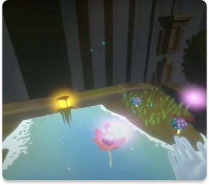

Building Virtual Worlds

Each themed world or experience was designed and built in 2 weeks with a team made up of 2 artists, 2 programmers, and 1 sound designer.
Roles: Programmer, Producer
Skills: C#, Unity, Oculus Quest 2, Tobii Eye Tracker
Goals: Gain experience in fast paced production and teamwork
Oculus Quest 2
Login with google/apple account. Easy onboarding flow, get to your tea faster.
Tobii Eye Tracker 5
Cleanly organized, find your tea faster without giving up on variety.
Teamwork
Nested modifier allows tea lover to curate their tea exactly how they like it. Discover what is possible.